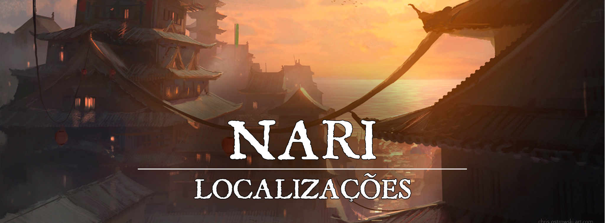

Nari
“Que as águas nos tragam novos horizontes, e que neles encontremos prosperidade.”
Descrição
Nari é uma das maiores cidades de Turgon, localizada na costa, construída com o propósito de se conectar com o resto do mundo, e prosperar cada vez mais. A cidade recebeu o nome baseado em Inari, deusa da prosperidade, que é vastamente adorada em Turgon. Majoritariamente a cidade foca em seus portos e seus serviços, sendo o maior ponto comercial de Turgon. É uma das cidades mais recentes criadas no reino.
Diferente das outras cidades de Turgon, Nari acabou se expandindo bastante para fora de suas muralhas, e continua a se expandir até então. Mesmo a cidade tendo seu grande foco comercial, não é muito difícil encontrar pobreza pela cidade, é só saber onde olhar.
Descrição Visual:
chris-ostrowski-the-alliance-chris-ostrowski-1200w.png |Nari
{kind=link}
Se acomodando na costa, uma vasta cidade aos poucos cresce. Repleta de mercadores, é uma cidade que claramente nasceu para o comércio, e por isso diversos vão até Nari para tentar ganhar suas vidas. O cheiro de produtos frescos está sempre presente, assim como o barulho das carroças indo de um lado para o outro. Dentro das muralhas é fácil encontrar grandes construções, sejam elas moradias ou comércios.
Sociedade
População:
O povo de Nari é muito diverso, mas majoritariamente encontram-se humanos e meio-elfos. Provavelmente é a cidade onde mais se encontram pessoas que não são nativas de Turgon dentro do reino.
Cultura:
É comum ver diversos pequenos rituais e tradições em Nari, geralmente os festivais mostram uma diferença cultural bem expressiva. Assim como no resto de Turgon, suas manufaturas são únicas. Desde suas vestimentas e culinária, até suas armas, ferramentas e arquitetura são coisas que são facilmente identificáveis. Aos poucos, Nari adota um pouco de outras culturas para si, com a vinda de novos viajantes e contato com outras culturas, mas essencialmente, tudo ainda se mantém turgonita devido à forte personalidade do lugar.
Caráter:
O povo de Nari é bem tradicionalista e disciplinado, na maior parte do tempo vão estar em busca de fazer acordos e trocas que vão beneficiá-los, mas não necessariamente irão tentar passar a perna em qualquer um. Inevitavelmente, o lugar também tem seu lado negro. Pirataria, contrabando e pessoas agindo de má-fé não são tão incomuns assim, ainda mais por ser uma cidade altamente comercial. Devido a velocidade do dia-a-dia do lugar, o povo de Nari está acostumado a acontecimentos repentinos e outras pequenas mudanças.
Datas e Festividades:
Festival do Verão: 21 de Junho; Festival do Outono: 22 de Setembro; Festival de Inverno: 21 de Dezembro; Festival de Primavera: 21 de Março. Em cada uma das estações, Turgon tem um grande festival em honra a Inari, e a um dos Quatro Lordes.
Festival do Verão. No dia 21 de Junho ocorre o Festival do Verão, dedicado a Suzaku e Inari. Por tradição, uma grande festa ocorre, e à meia-noite os turgonitas preparam lanternas de papel, escrevem desejos dentro delas, e as jogam aos céus, preenchendo-os com luzes e desejos que podem ser vistos de muito longe. O festival também é conhecido como “Festival das Lanternas”
Festival do Outono. No dia 22 de Setembro ocorre o Festival do Outono, dedicado a Byakko e Inari. É uma época onde as últimas colheitas antes do inverno são feitas, e por isso o festival de outono é cheio de diversas comidas. Geralmente passado na cidade, em seus centros comerciais as pessoas passeiam e festejam, bebendo e comendo o quanto podem.
Festival de Inverno. No dia 21 de Dezembro ocorre o festival de inverno, dedicado a Genbu e Inari. Diferente dos outros festivais, esse dia é um pouco mais calmo. Conforme a neve cai, as pessoas se dedicam a fazer uma visita ao templo de Inari, e passam um tempo com seus familiares e amigos.
Festival da Primavera. No dia 21 de Março ocorre o Festival da Primavera, dedicado a Seiryuu e Inari. Durante o dia o festival ocorre perto dos rios, lagos, e em outros lugares onde a natureza floresce. É a data onde as cerejeiras desabrocham, se despedindo do inverno. O povo de Nari despeja várias flores de lótus no mar. O festival também é conhecido como “Festival da Lótus”
Religião:
Assim como todas as cidades de Turgon, o povo de Nari adora a Inari, a deusa raposa da prosperidade, dos andarilhos e dos espíritos da natureza. O povo é muito religioso, mas sua cultura não exalta a adoração como outros povos. É comum em Nari que as pessoas de vez em quando visitem templos, santuários, ou simplesmente façam artesanato e pequenas preces para os Kami. Raramente é encontrada opressão religiosa pelo local.
Economia
A pescaria, exportação, importação e comércio são os grandes pilares da economia de Nari. Assim como Shuran - Capital, eles também têm um grande peso no comércio para a prosperidade da cidade.
Serviços:
A coisa mais fácil de se encontrar em Nari são serviços ligados a barcos, seja uma simples viagem, ou talvez a compra de um específico. Além disso, serviços gerais são facilmente encontrados tendo em vista o quão vasto é a área comercial da cidade.
Governo
Nari é uma grande cidade portuária de Turgon, o Império das Nuvens, comandada por um pequeno conselho montado pelos quatro clãs de Turgon, onde eles discutem estrategicamente os rumos que a cidade deve tomar. Logo abaixo da nobreza, os samurais possuem um cargo relevante, tomando conta da cidade com autoridade. Crimes e outros assuntos eram levados primeiro aos samurais e ao magistrado, e apenas casos muito graves seriam levados ao imperador em pessoa. Casos extremos poderiam condenar o criminoso ao Seppuku. Eles evitam manter prisioneiros em Nari, mas possuem diversas celas preparadas para encarcerar criminosos. Muitas vezes os criminosos são levados para prisões de outras cidades.
Poderio Militar:
Nari é uma cidade bem guarnecida, e seu ponto mais forte é sua Marinha. É a cidade turgonita que mais conta com armas de fogo entre seus soldados, e em sua maioria, são preparados para luta em terrenos desfavoráveis, seja nos navios ou até mesmo na água. Armaduras leves são suas favoritas, mas na cidade contam com diversas tropas mais pesadas. O foco militar fica dentro das muralhas, enquanto o lado de fora não conta com muitas rondas.
Conflito
Não é difícil de se encontrar bandidos em Nari. Principalmente por sua condição geopolítica, a cidade costuma ser a que é maior alvo de crimes de toda Turgon, mas em contrapartida, não tem tantos problemas com youkais. Pirataria, contrabando e extorsão aparecem até mesmo sob a luz do dia, já que a cidade se expande muito para fora das muralhas, a guarda não é capaz de vigiar cada canto, e às vezes até faz vista grossa caso receba a quantia certa. Barcos piratas também são vistos com certa facilidade, mas combatidos com mais foco pela marinha da Nari. Algumas gangues também lentamente se formam e se desmontam, tendo diversos conflitos principalmente além dos muros. De tempos em tempos, algumas gangues conseguem notoriedade e influência a pontos preocupantes.
Pela ideologia da cidade, onde muitos buscam oportunidades para crescer de seu próprio jeito, ela acaba sendo uma das cidades mais caóticas de Turgon, tanto de um jeito bom, quanto ruim. Tanto é que dizem em Turgon “Se busca por novas marés, vá para Nari.”
Organizações Relevantes
A Liga de Jade é uma organização comerciante que busca estreitar os laços econômicos entre as cidades de Turgon, auxiliando comerciantes e buscando a prosperidade do reino. A principal base da organização fica em Nari.
Os Hebi são uma gangue que ganhou notoriedade com o passar dos tempos, se tornando uma das maiores e mais temidas hoje em dia. Mercenários e assassinos tramam pelas vielas de Nari, e às vezes até expandem seus “negócios” para mais longe. Caracterizados por suas tatuagens de cobra que cobrem grande parte do corpo ou dos braços. Aqueles de alto escalão se escondem nas sombras, e comandam os esquemas guardando grande riqueza. Os hebi lutam pelo monopólio criminoso entre as gangues, e causam diversos conflitos.
Os Águias de Aço são um grupo que atua por boa parte de Nari, principalmente além das muralhas. Muitas vezes colocando ordem onde a guarda não alcança. Mesmo que sua causa pareça nobre, eles trabalham à beira da lei, e não são formados apenas de ideais, mas também de interesses. Fazem serviços mercenários, mas geralmente não aceitam caso o propósito seja mal-intencionado. Trabalham com escolta, proteção, e até mesmo assassinato dependendo do alvo. O grupo é formado principalmente por shinobis, além de outros guerreiros e conjuradores.
A Aliança de Prata agora é mal-vista pelos Águias de Aço após terem aceitado um trabalho dos Hebi, e assassinado alguns dos seus membros. Será bem difícil conseguir cooperação com a organização. Só não são hostilizados imediatamente por conta de uma outra boa ação que fizeram pouco tempo antes deste ocorrido.
Locais Relevantes
O Bairro das Mentiras se localiza na parte de fora das muralhas de Nari, na periferia da cidade, e é bem caracterizado por conta das diversas “casas de luxúria” que movimentam a noite do lugar. Porém, o Bairro das Mentiras não é um lugar onde se deve andar despreocupado, ao mesmo tempo em que se pode encontrar “diversão” por essas vielas, também é fácil ser enganado pelos perigos da periferia. Afinal, o bairro não recebeu esse nome a troco de nada, a atividade criminosa nesse bairro é extremamente alta.
A Casa da Serpente é um centro de apostas localizado dentro do Bairro das Mentiras, mais longe das vias principais. É bem popular durante a noite, servindo bebidas e disponibilizando diversos jogos de azar. O estabelecimento pertence aos Hebi, e alguns de seus representantes coordenam o lugar em pessoa. Um lugar bem atrativo, mas que acaba por gerar grandes dívidas que serão cobradas de uma forma ou de outra pela gangue.
Os Mercados de Jade são o coração do comércio de Nari, composto pelas maiores lojas e companhias mercantes da cidade, se algo é possível de ser comprado em Turgon, provavelmente esse mesmo algo pode ser encontrado por essas ruas. É nesses mercados que se encontra a sede da Liga de Jade.
O Porto Kingyo, ou Porto do Peixe Dourado é o principal porto de Nari e onde uma das mais movimentadas “portas de entrada” do Império das Nuvens. Diariamente diversas embarcações atracam nas marinas do porto para descarregar ou carregar tanto viajantes quanto todo tipo de material ou objeto que pode ser comercializado.
A Praça dos Quatro Cantos é um ponto turístico de Nari. A praça é caracterizada principalmente pelas quatro estátuas dos Quatro Lordes que definem seus limites. Junto às estátuas de cada Kami, também podem ser encontradas pequenas embaixadas dos Quatro Clãs, cada uma próxima da estátua de seu Kami guardião . Ao mesmo tempo, a Praça dos Quatro Cantos é uma famosa área de lazer de Nari, onde normalmente ocorrem os festivais e festas da cidade. A praça também é rodeada de diversos restaurantes e tavernas que trazem tanto a culinária turgonita quanto outras do resto do mundo.
A Kadrel Sushi é uma taverna peculiar, mas muito popular por diversas razões, se localizando próxima da Praça dos Quatro Cantos. O dono é um anão estrangeiro vindo direto de Kadrel Amorûk. O estabelecimento se tornou muito popular por sua culinária, fazendo sushi e outros pratos turgonitas, mas com seu toque enânico do norte. A combinação criou uma culinária extremamente distinta e chamativa. É uma taverna acolhedora, principalmente por causa do taverneiro Simon, que recebe todos os clientes de braços abertos.
Do outro lado da rua existe uma barraquinha de ramen chamada Matsuramen, com a qual Simon constantemente tem desentendimentos menores, mas no fundo, parece que ambos são velhos amigos.
A Praia do Sol Nascente é outro ponto turístico famoso da cidade de Nari que chama bastante atenção por conta do gigantesco portão torii que se destaca nas águas da praia. Existe um ritual famoso entre os moradores de Nari que consiste em mergulhar nas águas da praia e atravessar o torii flutuante para se alcançar a renovação e se iniciar um novo ciclo de boa sorte.
O Palácio do Conselho é o lugar onde o conselho de Nari se reúne para suas reuniões e decisões, além de servir como um local onde várias burocracias ocorrem. Tratando negócios e ouvindo as vontades do povo. O local é altamente guardado e fica aberto durante o dia, mas sempre contanto com guardas coordenando os visitantes. Durante reuniões importantes o lugar fica fechado.
O Olho de Oni é uma loja de artigos mágicos, chás, artigos medicinais e informações localizada na parte de dentro das muralhas, próximo à Praça dos Quatro Cantos. Um lugar peculiar, esquisito aos olhos de muitos, mas atrativo para muitos que tem interesse no sobrenatural. O dono do lugar é uma figura esquisita, sempre vestindo uma máscara de Oni, Sakuran parece ser um elfo por conta das orelhas e outros traços gerais, mas ele diz ser um Youkai. Parece sempre ter alguma coisa relevante para aventureiros, seja um caso que ouviu pela cidade, ou um item bem peculiar. A loja não parece ter um horário regular, apesar de geralmente estar aberta.
NPCs Relevantes
Simon é um anão dono da taverna Kadrel Sushi. Apesar de sua origem enânica, Simon já é quase um cidadão nascido em Turgon, ele veio para Nari como um comerciante viajante quando a mesma ainda estava em seus primeiros anos e, por conta de um pequeno acidente que o impossibilitou de continuar sua vida de viagens, decidiu abrir uma taverna na cidade. Simon possui uma personalidade forte como todo anão e fala com um sotaque bem característico, porém, também é bem receptivo e acolhe a todos, incluindo figuras que podem ser consideradas controversas em sua taverna, mas, caso alguém perturbe a paz de sua caneca de cerveja com atos violentos, Simon logo age para conter e apaziguar o ambiente. Por conta de sua peculiaridade e grande individualidade Simon é bem conhecido em Nari.
7RZdUq.png |Sakuran
{kind=link}
Sakuran é o dono da loja Olho de Oni. Ele diz ser um youkai e sempre veste uma máscara de Oni, tem orelhas de elfo e longos cabelos quase brancos. Tem uma personalidade excêntrica, e até mesmo divertida, fazendo contraste com sua máscara mal-encarada. Falando com ele as pessoas às vezes até esquecem que ele é um conjurador poderoso. Nunca visto sem máscara, e às vezes é percebido perambulando pela cidade sem razão aparente, até mesmo em horário comercial. Trabalha completamente sozinho, com exceção de uma ou outra invocação que faz de vez em quando. Algumas pessoas indagam sobre a integridade dele, mas aqueles mais próximos sabem que é confiável. Apesar de seu desleixo e personalidade, ele é muito respeitado entre as ruas, e dizem que nem mesmo os Hebi ousariam mexer com ele.
Origem
A cidade de Nari foi a última cidade a ser formada dentro do Império de Turgon, sendo fundada principalmente por conta da necessidade de se ter uma saída para os mares, já que o alto relevo de Turgon dificulta bastante as viagens por terra. A cidade está em constante crescimento para além de suas muralhas, já que a mesma tomou proporções maiores do que o esperado em sua fundação pelo grande movimento de estrangeiros que chegam a Turgon por meio de seus portos.
A expansão natural de Nari deu as boas vindas a diversas outras culturas, e tornou a cidade um grande centro cultural, onde muitas coisas acabam acontecendo todos os dias. O movimento é muito intenso, e surpreende as pessoas que vêm de lugares mais calmos.
Acontecimentos
Membros da Guilda da Aliança de Prata foram avistados pelos Águias de Aço sendo contratados pelos Hebi para assassinar um membro relevante de seu grupo nos arredores da cidade, mas paredes possuem olhos, ouvidos, e a notícia corre. A Aliança de Prata agora é mal-vista pelos Águias de Aço, e só não são hostilizados por conta de uma outra boa ação que fizeram pouco tempo antes deste ocorrido.